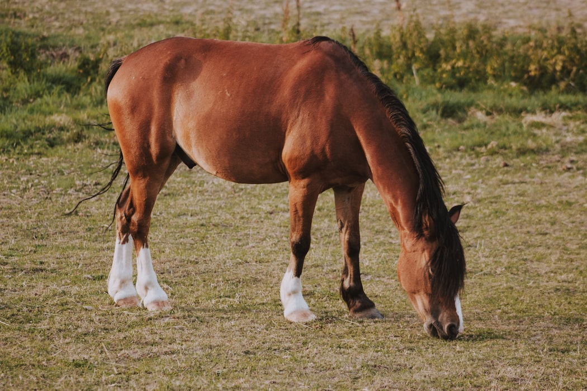
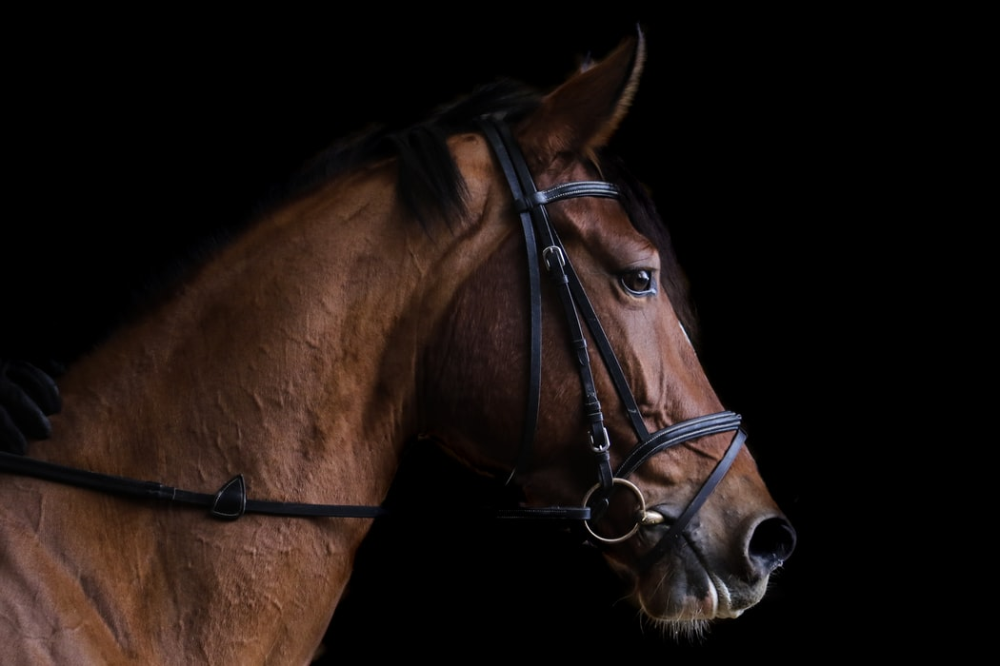
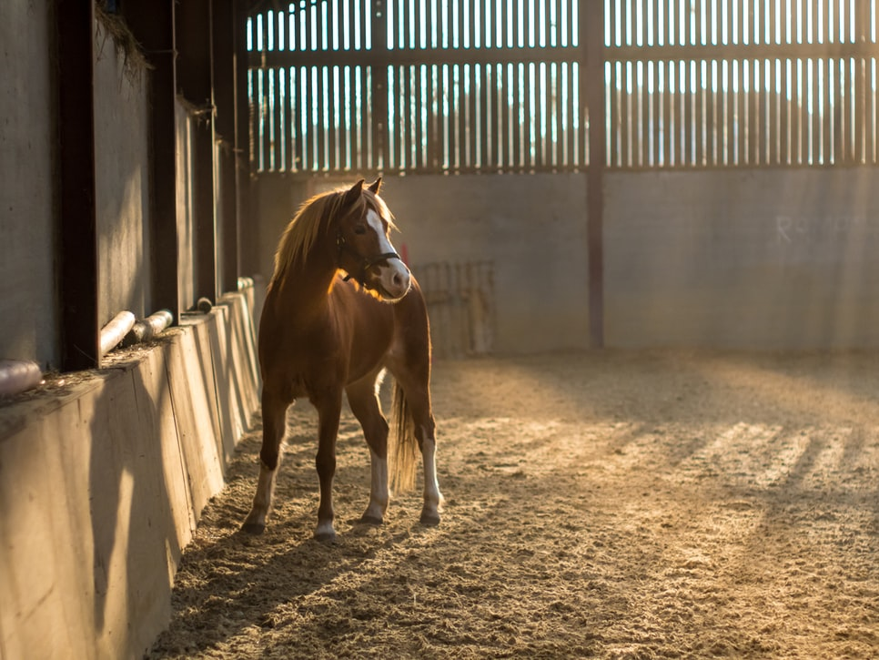

Arabian Horse As Specie
Horses have long played a significant part in UAE culture, as well
as in the culture of many Arab countries. The horse has long been
associated with chivalry, pride, and grandeur. Arabian horses were
born and raised in the desert, where they interacted with humans
on a regular basis. They are regarded as one of the world's oldest
and purest horse breeds. The Arabian horse is thought to have
originated in the Arabian Gulf. The Arabian has a distinct head
form and a high tail carriage, making it one of the world's most
easily recognized breeds. Arabian horses have been utilized to
enhance other breeds by adding speed, refinement, endurance, and
strong bones, as seen by their proliferation over the world
through war and commerce. Arabian genetics may now be found in
nearly every current breed of riding horse.


Wild and Domesticated
There is just one species of domestic horse, yet there are around
400 distinct varieties that specialize in everything from wagon
hauling to racing. Horses are all grazers. While the majority of
horses are domesticated, several remain wild. Feral horses are the
offspring of once-tame animals that have roamed the countryside
for centuries. Groups of these horses may be found all over the
world. North American mustangs, for example, are descended from
horses introduced by Europeans more than 400 years ago.
Royal stables
Stables in Abu Dhabi were created in 1969 to serve as private
stables for Shaikh Zayed Bin Sultan Al Nahyan's horses. In his
royal stables in 1980, Shaikh Zayed began a breeding program for
what Emiratis term "asil," which means "purebred" Arabian horses.
Shaikh Zayed had a true affection for the "asil Arabian horse,"
and his clear affection is shared by the people of the United Arab
Emirates. His Majesty Shaikh Mohammad Bin Rashid Al Maktoum,
Vice-President and Prime Minister of the United Arab Emirates and
Ruler of Dubai, inherited a passion for horses and has achieved
and documented a string of worldwide victories in horse racing
contests. In 1994, he founded the Godolphin stable, named after
his favorite Arabian horse, Godolphin, and in 2008, he received
the Special Award of Merit at the Cartier Awards.
